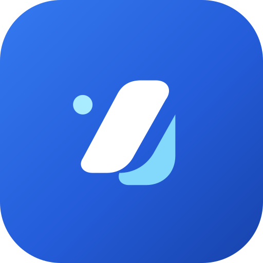

Un chat que te sigue el hilo.
Escribí, mandá un audio o compartí un archivo. Pedí ayuda con lo que tenés entre manos, sin ordenar todo antes.

asistentebeta DescargarUn asistente que recuerda lo importante, conecta tus apps y te ayuda a organizar el día. Siempre a mano, en tu Android.
Para tenerlo en cuenta cuando organizás la semana.
Lo contaste en el chatEl dato más reciente reemplaza al anterior.
Corregido por vosVos decidís qué recordar.
Y qué dejar atrás.
Trabajo, familia, ideas y trámites.
Todo eso que pasa entre una app y otra.
Escribí, mandá un audio o compartí un archivo. Pedí ayuda con lo que tenés entre manos, sin ordenar todo antes.
Creá eventos y tareas desde el chat. Prepará o respondé correos y revisalos antes de confirmar el envío.
Programá instrucciones recurrentes y elegí cuándo revisar tus fuentes y cuántos avisos recibir. Android puede demorar las tareas en segundo plano.
Lo que le contás puede convertirse en una memoria útil. Cuando volvés a hablar, busca el contexto relacionado para responderte sin enviar todo tu historial.
Compartí lo que necesitás entender.
Conservá lo que vale la pena recordar.
Importá un chat TXT o ZIP de WhatsApp. Obtené un resumen conjunto con citas y posibles lecturas, sin convertir interpretaciones en certezas sobre otra persona.
Agenda, pendientes con o sin fecha y avisos en Hoy. Sumá el widget para tenerlos a mano desde la pantalla de inicio.
Mandale una captura, una circular o un documento. Revisá las fuentes y guardá los pendientes o referencias que te sirvan.
La app funciona desde tu Android, sin dejar una PC encendida. La nube cumple un papel concreto y vos elegís qué conexiones activar.
Historial, memorias e índice semántico se conservan localmente, cifrados.
Con tu cuenta de Google podés recuperar memorias, mensajes, transcripciones y la configuración de IA. La sincronización es opcional y se cifra en tu dispositivo.
El proveedor recibe el mensaje y el contexto necesario. Usás tu propia clave; las consultas tienen el costo de su API.
Es una beta en desarrollo.
Una invitación a probar y mejorar.
Un teléfono con Android 9 o posterior y una clave propia de OpenAI para las funciones de IA. La app se probó principalmente en un Pixel 9 emulado con Android 17; la compatibilidad y el comportamiento en otros equipos pueden variar.
Podés descargar esta beta sin pagar por el APK. Las consultas de IA se facturan en tu cuenta del proveedor, según el uso. La descarga no incluye créditos de IA ni promete un precio para futuras versiones.
La cuenta de Google permite sincronizar tu espacio personal en Drive. Gmail, Calendar y Tasks piden permisos adicionales cuando los conectás. Google puede limitar el acceso a permisos pendientes de verificación. El chat con tu propia clave también funciona sin conectar una cuenta de Google.
No accede directamente a tu historial de WhatsApp. Podés importar un chat exportado en TXT/ZIP y, de forma opcional, permitirle analizar las notificaciones que Android le entregue. Los mensajes no recibidos, los borrados y los medios omitidos quedan fuera de ese alcance.
En el Android que ya usás, abrí Ajustes → Cuenta de Google y elegí tu cuenta. Cuando termine la primera sincronización, entrá con esa cuenta en otro equipo compatible. Recuperás memorias, conversaciones, transcripciones y tu clave personal de IA. Los cambios se combinan mientras las aplicaciones están abiertas. Las copias antiguas con frase se pueden migrar desde el teléfono que conserva los datos.
Descargá el APK de esta página y abrilo en Android. El sistema puede pedirte permitir instalaciones desde tu navegador y confirmar. Si ya la usás, instalá la actualización sobre tu app actual para conservar tus datos. Las próximas versiones se descargan desde Ajustes → Actualizaciones por el canal público, sin token de GitHub.
Instalá la beta, elegí cómo llamarlo
y empezá a contarle tu día.
Descarga pública desde GitHub. No necesitás una cuenta para descargar.
Requiere configuración inicial y clave propia para la IA. Algunas funciones de Google dependen de la verificación de sus permisos.